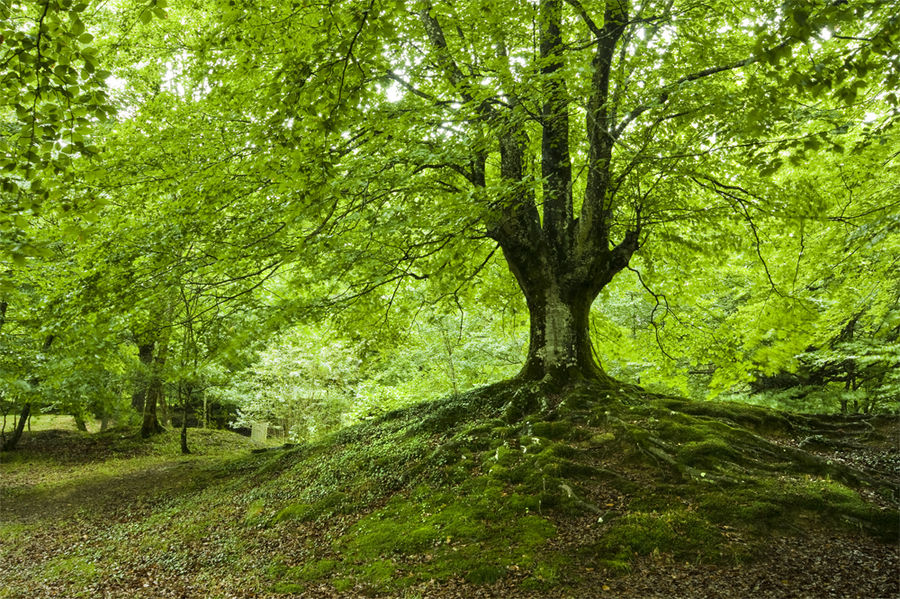
El haya, cuyo nombre científico es Fagus sylvatica, es uno de los árboles más populares e impresionantes. Es uno de los protagonistas más importantes de la estación otoñal, ya que sus hojas se tiñen de colores rojos o anaranjados según la variedad. Con una altura de 40 metros, crece verticalmente si está en grupos, o bien ramifica a muy temprana edad si se encuentra aislado.
Su copa está formada por hojas simples, alternas si el ejemplar es joven, de color verde o púrpura, que cambian a amarillo o rojo brillante en otoño antes de caer. Las ramas pueden estar ligeramente arqueadas hacia abajo, o estar muy arqueadas tocando con algunas hojas el suelo dependiendo de la subespecie o cultivar. Es monoica; es decir, hay pies femeninos y pies masculinos. Las flores femeninas salen en grupos de una a tres, a veces cuatro, sobre un pedúnculo de color pardo-grisáceo; y las masculinas brotan en inflorescencias globosas. El fruto, con forma de cúpula abierta, contiene de una a tres semillas, llamadas también hayucos.
Tiene un crecimiento lento, pero es muy longevo. Su lema parece ser: lenta, pero segura. De hecho, su esperanza de vida es de 300 años. Es un árbol que no soporta la sequía ni el encharcamiento. Durante el verano precisa de riegos muy frecuentes, intentando en lo posible evitar que la tierra o sustrato se seque del todo; el resto del año, si bien habrá que reducir la frecuencia de riegos, se le tendrá que dar un riego moderado. Para evitar que las raíces se pudran o que por el contrario se sequen, se puede comprobar la humedad de la tierra antes de proceder a echarle agua. Para ello bastará con un introducir un palo delgado de madera: si al extraerlo sale prácticamente limpio, se tendrá que regar.

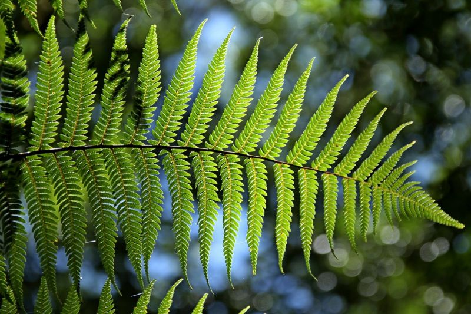
El helecho es una planta de las denominadas vasculares, es decir que cuenta con un sistema de vasos que transportan ele agua y los nutrientes. Pero a diferencia de muchas otras especies vegetales, el helecho carece de flores y de semillas. Son plantas que crecen en zonas de mucha humedad y una de las características más importantes de los helechos son sus grandes hojas, llamas frondas.
Debido a la enorme variedad de helechos (se han registrado casi 10 mil) existen algunas variedades a las que se denominan helechos verdaderos, una de ellas y la más común y conocida es el helecho leptosporangiado. Estas plantas presentan una fronda compuesta y bipinnada, es decir que la hoja presenta divisiones y a su vez, cada gajo presente divisiones o pinneados.
Los helechos pueden presentarse como plantas rastreras, trepadoras, áreas, erectas y hasta acuáticas. Biológicamente, el helecho se presenta en 2 fases durante su ciclo de vida. El primero de ellos es el denominado esporofito y es la fase del helecho tal cual lo conocemos, con sus grandes frondas. En determinadas épocas del año, las frondas presentan unos pequeños bultos o protuberancias, llamadas soros, en ellos se encuentran las esporas.
Cuando las esporas del helecho encuentran las condiciones de hábitat adecuado, esto es suficiente calor y humedad, comienza a germinar. De este proceso de germinación nacerá una pequeña planta sexuada o gametofito, que se la conoce con el nombre de prótalo. Esta fase es la menos conocida del helecho.

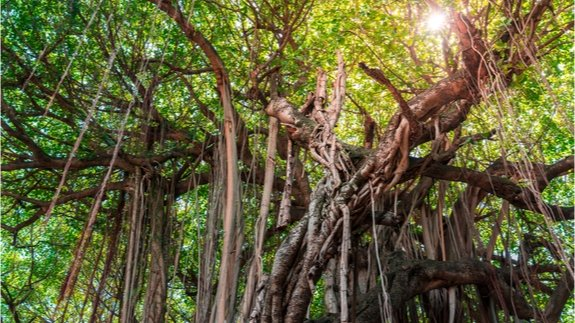
Las lianas, cipós y trepadoras pertenecen a un grupo de plantas que germinan en el suelo, se mantienen enraizadas durante toda su vida y necesitan de un soporte para mantenerse erectas y creciendo en dirección a la luz abundante, disponible sobre el dosel arbóreo de los bosques. Las trepadoras pueden ser herbáceas o leñosas.
Hay varios métodos que las lianas utilizan para escalar superficies. Pueden ser volúbles, cuando su forma se amolda a una superficie, enrollándose e impregnándose en ella, por medio de zarcillos, raíces grampiformes (cuya única función es prender el tallo sobre una superficie vertical), o son lianas facultativas (arbustos con ramas largas o espinas, hierbas rastreras, que al contacto con una estructura vertical, apoyan sus ramas y se desarrollan verticalmente). Son muy comunes y algunos frutos y legumbres se originan de este tipo de plantas: uva, maracuyá, kiwi y chayote. También algunas plantas ornamentales como el jazmín, la clematis, ciertas variedades de rosas y filodendros son trepadoras.

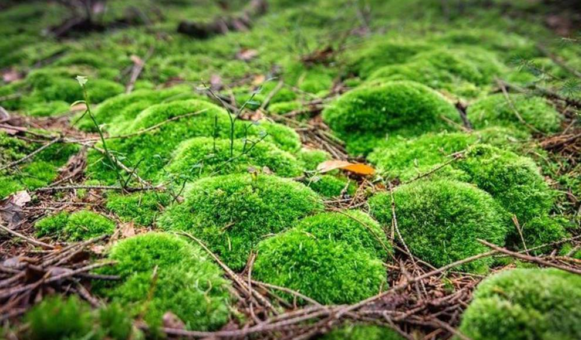
Durante los meses más lluviosos los troncos de los árboles, las paredes e incluso las rocas se pueden llegar a cubrir de una preciosa alfombra verde que mide apenas 1 o 2 centímetros de altura: es el musgo, un tipo de planta que tiene la capacidad de darle ese toque verde que a veces se echa en falta en algunos paisajes… y también en algunas macetas.
Cuando hablamos de musgo hacemos referencia a unas plantas llamadas briófitas que se caracterizan por no tener ni vasos conductores, ni flores, ni frutos, ni siquiera verdaderas raíces. Fueron una de las primeras plantas terrestres que se diversificaron, colonizando las regiones húmedas de la Tierra, hace unos 289 millones de años. Se caracterizan por tener »tallos», mejor llamados caulidios, pues no poseen un tallo verdadero, y »hojas» (filidios) que recuerdan mucho a las gemas. Su altura no supera los 10cm; sin embargo, pueden llegar a cubrir un área bastante considerable, como una roca o, incluso, con el tiempo, una pared. Y es que crecen en cualquier lugar húmedo y protegido del sol directo. Durante la época seca se marchitan casi por completo, pero una vez que regresan las lluvias reverdecen.

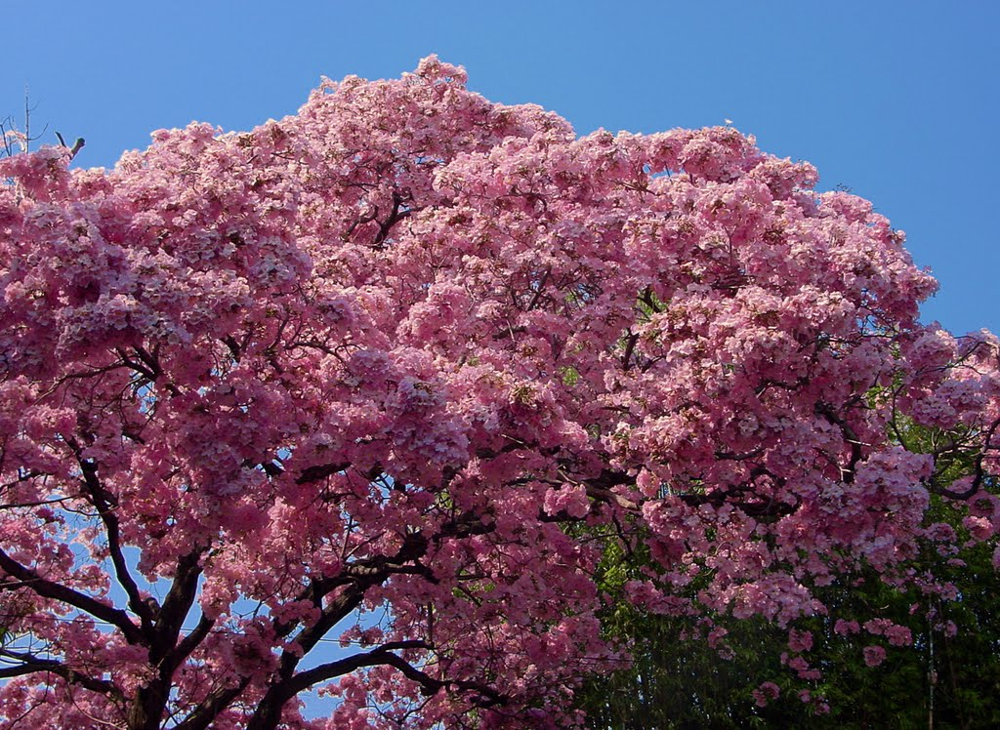
El Palo Rosa, o Perobá, cuyo nombre científico es Aspidosperma polyneuron, es un árbol melífero de alto porte que suele alcanzar los cuarenta metros con un diámetro troncal de ochenta centímetros. Su madera rosada, fuerte y resistente, de porosidad difusa y fibrosidad media, se emplea tanto en la construcción como en la carpintería.
Tiene copa de redondeada a cónica y sus raíces son tubulares. La corteza posee un espesor de tres centímetros y medio, siendo la parte externa profundamente fisurada y de color ceniciento mientras que la interna es rosa. Las hojas son simples, ovales y acuminadas, de aspecto coriáceo y disposición alterna; emiten un suave aroma y su sabor es agradable; al ser arrancadas de la planta exudan una sustancia gomosa; muchos mamíferos de las regiones donde abunda el Palo Rosa se alimentan de ellas.

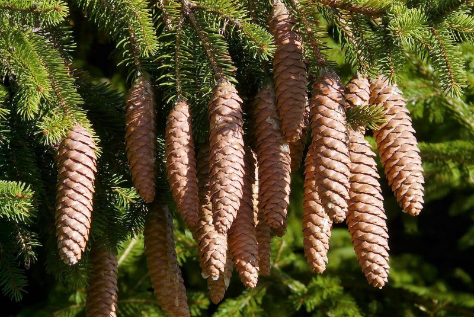
El picea abies cuenta con una copa en forma de pirámide, que luce regular, espesa y renegrida cuando se ve a distancia. Su estructura puede variar según las distintas razas. Curiosamente, puede superar los 70 metros de alto, pero frecuentemente no crece más de 50. Lamentablemente, el picea abies no es muy resistente contra huracanes y torbellinos, pero su erguido y fuerte tronco puede medir hasta dos metros de diámetro. Adquiere tonos grises, pero también pardo rojizos. Con el tiempo presenta descamaciones ligeras.
Es posible diferenciar las distintas razas de picea abies por la posición de sus ramas. Por lo general son de inserción opuesta, pero pueden asumir otras posturas. En los llanos, a latitud inferior, es posible encontrar ejemplares con copas más anchas, ramas con arcos que descienden, y una que otra ramilla pendular. Cuando se trata de árboles ubicados en la montaña y a grandes distancias, las ramas pueden ser pequeñas, horizontales, con una ligera figura de columna. Frecuentemente dirige su caída hacia abajo, formando una copa angosta y aguda.
Se alcanza a dilucidar un color pardo o amarillento en las ramas de un picea abies. Sus hojas aciculares alcanzan los 2.5 cm de longitud. Son rígidas y picudas, de un intenso y destellante color verde. Cuando la primavera florece, las ramas que brotan del picea abies muestran mezcla de tonos verdes y amarillos. Los picea abies se agrupan en numerosos nichos, que permiten una polinización efectiva, especialmente en los bosques nórdicos, donde se puede observar un manto de matices amarillentos en la superficie de lagos y pantanos. Estos árboles suelen florecer entre abril y mayo, mientras que su fruto, los piñones, maduran cerca del mes de octubre, lo que da lugar a la diseminación.

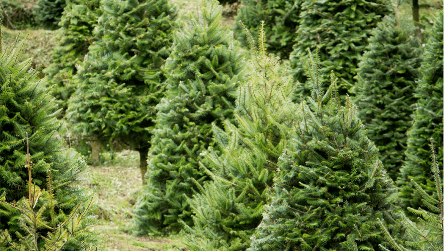
Es una especie arbórea que puede alcanzar una altura de 50 metros y un diámetro de 1 metro. Se localiza las zonas de vida “Bosque Muy Húmedo Montano Subtropical”
Es una especie arbórea que puede alcanzar una altura de 50 metros y un diámetro de 1 metro. Se localiza entre el rango altitudinal de los 2400 a los 3500 msnm, en las zonas de vida “Bosque Muy Húmedo Montano Subtropical”
Abies guatemalensis rara vez forma rodales monoespecíficos, ya que se encuentra generalmente bastante dispersa. De hecho, se asocia con varias otras coníferas de montaña

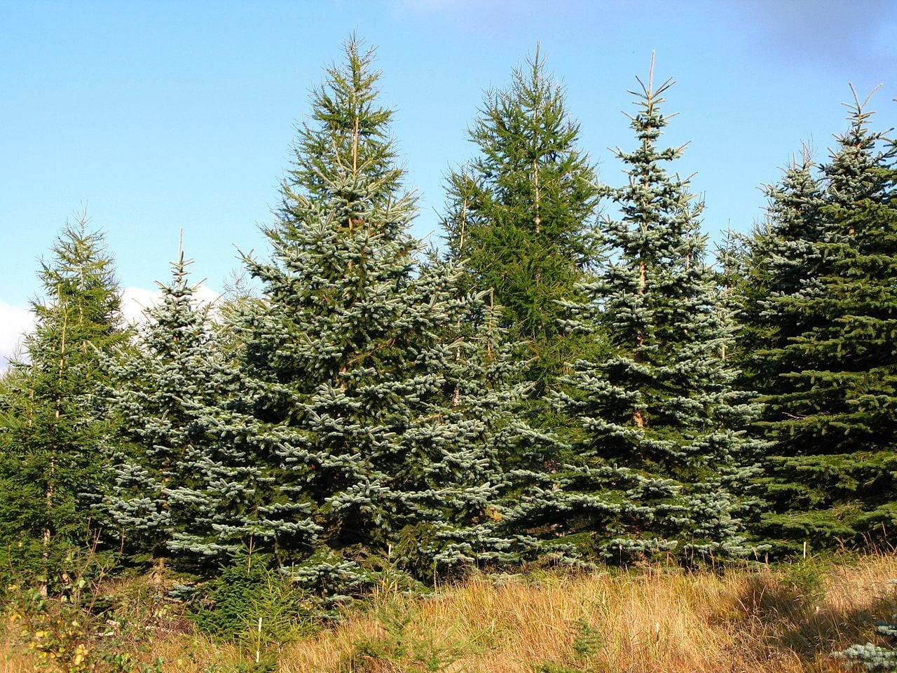
Las pináceas (familia Pinaceae y Orden Pinales), son coníferas que poseen canales de resina en la madera y las hojas, sus hojas son lineales o como agujas en general, monoicos, los conos con complejos dispuestos en espiral y aplanados y como brácteas, las brácteas libres de la escama, dos óvulos invertidos, y semillas con un ala larga terminal.
Es un grupo de plantas que se consideran los pulmones de las ciudades por la gran cantidad de oxígeno que producen, tienen una gran importancia económica porque se usan para construir casas, papel, fuente de resinas, barnices, encolantes, artesanía, tienen estróbilos, hojas en forma de aguja
Árboles (ocasionalmente arbustos), muchas veces que emiten fragancias fuertes de la corteza o las hojas, con canales de resina presentes en la madera y las hojas. Ramas verticiladas u opuestas (raramente alternadas). Hojas simples, lineales o como agujas (raramente delgadamete aovadas), dispuestas en espiral pero muchas veces semejando dísticas por torcedura de la base de la hoja llevando la mayoría de las hojas a aparecer en un plano, agrupadas o en fascículos en grupos de 2 a 5 en Pinus, sésiles o con pecíolo corto, en ramas largas o densamente agrupadas en cortas ramas, persistentes.

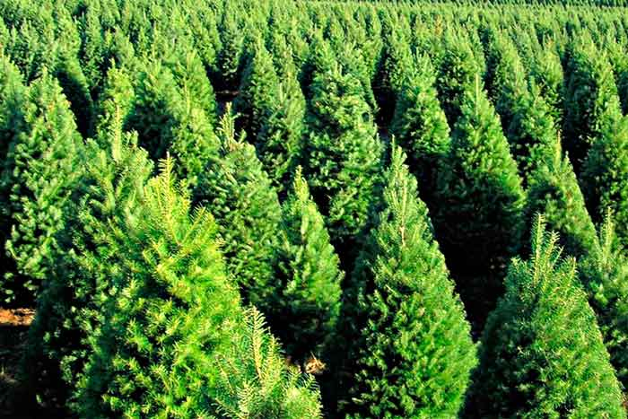
El género Pinus, conocido comúnmente como pinos, comprende a un conjunto de plantas vasculares y es incluido dentro de las coníferas y, a su vez, dentro de la familia Pinaceae de las Gimnospermas. Es un género con gran diversidad y es muy importante económicamente por sus usos forestales ya que, muchas de las especies de pinos producen madera que se emplea en construcción, elaboración de muebles y otros utensilios y papel.
Se trata de un género de árboles siempre verdes y gran parte de ellos se caracteriza por poseer grandes dimensiones, es poco común encontrar especies arbustivas. Los pinos son plantas monoicas. La disposición de las ramas le otorga una forma piramidal a la copa. Las hojas se disponen en macroblastos y braquiblastos.
Los macroblastos tienen hojas escuamiformes o como escamas, sin clorofila. Los braquiblastos tienen entrenudos muy acortados, las hojas son largas, en forma de agujas y tienen una vaina membranosa de escamas. También, los pinos poseen conos que portan las estructuras reproductivas, lo que les da la identidad de coníferas.

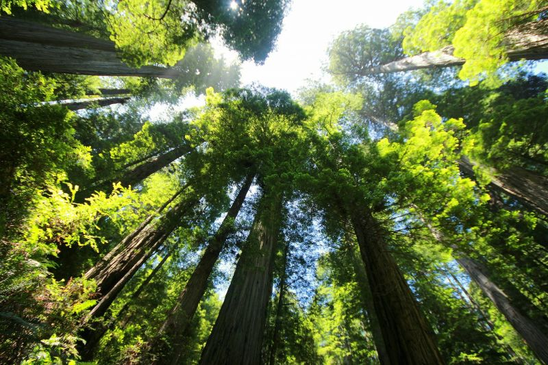
Es conocido también como secuoya roja, secuoya californiana, pero cuyo nombre científico es Sequoia Sempervirens. El nombre a esta especia fue dado en homenaje a un jefe cheroqui conocido como Sequoyah.
La secuoya es una conífera de la familia de las Cupressaseae y cuya subfamilia se denomina Sequoioideae. Es un árbol que se caracteriza por su longevidad, una secuoya puede vivir entre 2 y 3 mil años, y por ser la conífera más alta que se conoce. Algunas han llegado a alcanzar los 115 metros de altura. Los árboles de secuoya son verdaderos colosos dentro del reino vegetal.
Este árbol posee características muy particulares, además de las ya descriptas y nos permiten identificarlas con facilidad. Tallo cilíndrico y recto, muestra ramas ligeramente encorvadas hacia abajo. Este coloso entre los árboles se destaca por su corteza muy gruesa, su madera es de color rojiza por lo que es sumamente apreciada por los ebanistas. Pero en la actualidad, las secuoyas se encuentran protegidas en reservas naturales. Las hojas de este árbol se agrupan en hileras enfrentadas y son de tamaños variables que van desde los 15 hasta los 20 mm son largas y aplanadas. Son de color verde bien oscuro, aunque cuando aún son jóvenes presentan un leve color azul verdoso.

Y ahora pasamos a darte unos consejos básicos sobre cómo cuidar tus plantas. Eso sí, siempre partiendo de la base de que cada planta es un mundo y como tal cada una tiene sus propias instrucciones de supervivencia. Así que infórmate bien de cómo tienes que cuidar cada planta en concreto:
Luz: La luz es importantísima, prácticamente todas las plantas la necesitan para vivir (sin ella no podrían realizar la fotosíntesis) aunque, eso sí, unas la necesitan mucho más que otras. Lo ideal es colocar las plantas en un lugar de la casa donde las dé la luz, pero que no incidan directamente sobre ellas los rayos solares.
Temperatura: En las de interior lo idóneo normalmente es una temperatura de entre 15 y 20º C. No las pegues a los radiadores ni las coloques en lugares de mucha corriente. Y si te decides por plantas delicadas, también ten cuidado a la hora de ventilar.
Riego: No te olvides de regar tus plantas pero, aunque parezca mentira, en esto es mejor quedarse un poco corto que pasarse. Nunca hay que encharcar las plantas ya que el exceso de agua unido al frío puede hacer que las raíces se pudran.
Otros: Si están en el exterior, ten mucho cuidado con las heladas.
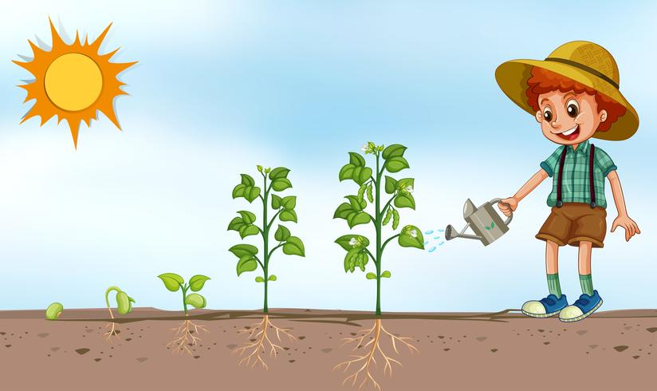
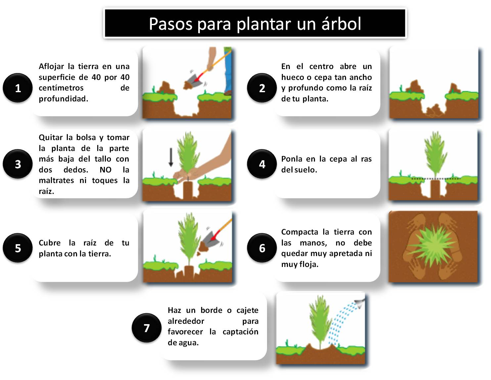